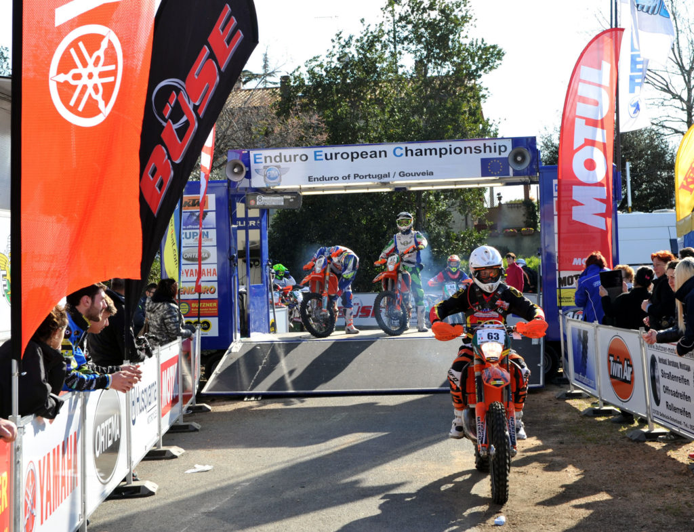
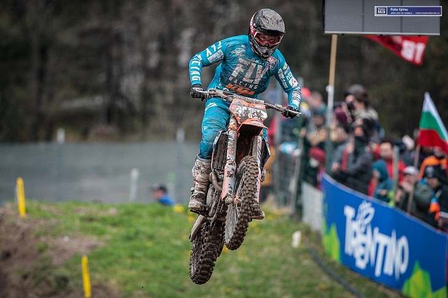
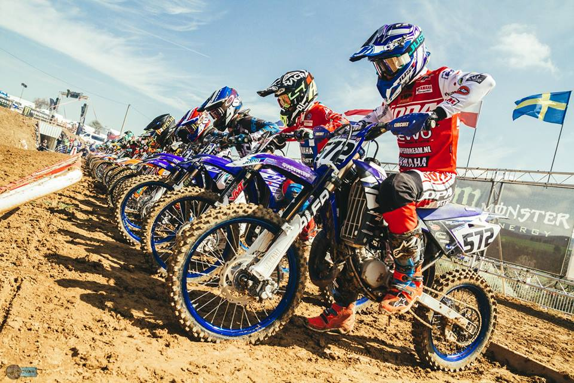
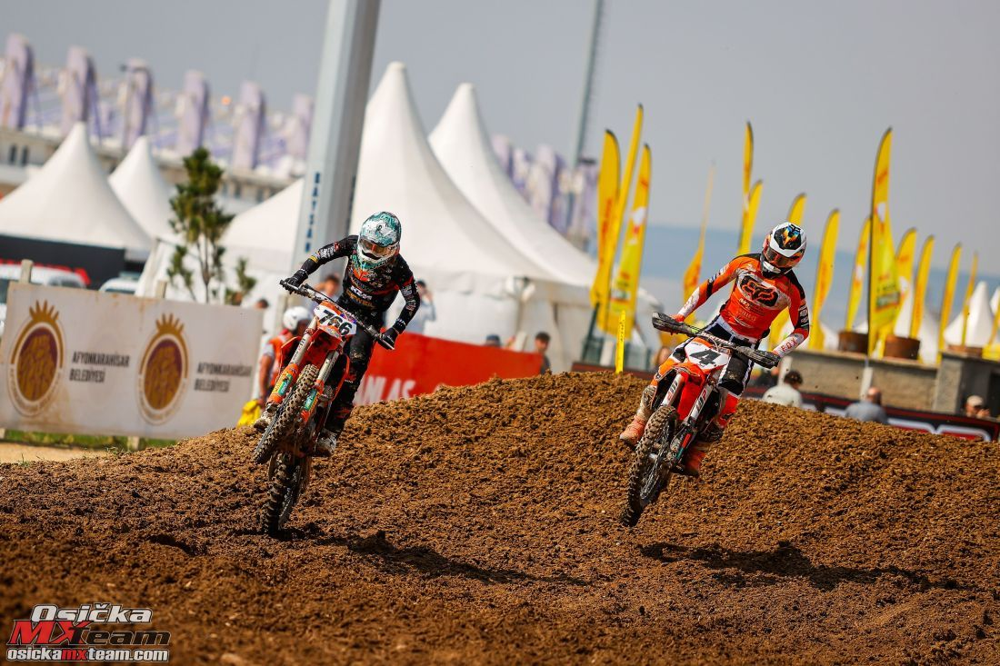

Tohtoročný seriál majstrovstiev Európy enduro odštartoval uplynulý víkend v Portugalsku. Nepriaznivé počasie – dážď i krupobitie poznačili i priebeh tohto šampionátu. Absolútnym víťazom oboch súťažných dní v Gois sa stal ešte len 21 ročný český jazdec Kryštof Kouble. Slovenský jazdec Thomas Hostinský zvíťazil v triede 250 2T. Katka Hostinská obsadila 8.miesto. V 1. súťažný deň všetci jazdci zápasili s nepriaznivým počasím viac ako s konkurenciou. Kryštof Kouble sa ujal hneď v úvode vedenia v absolútnom poradí. Postupne získal viac ako 22 s. náskok, ktorý čiastočne stratil po páde v enduro teste.
V poradí 4. podujatie seriálu majstrovstiev sveta „2019 FIM MXGP Motocross World Championship“ sa tento víkend (6.-7. apríla) konalo v Taliansku, na trati pri dedinke Pietramurata, neďaleko Arco di Trento. Slovenskému pretekárovi Richardovi Šikyňovi (MX Slovakia), jazdiacemu vo farbách českého partnerského tímu JD GUNNEX KTM RACING TEAM tieto preteky nevyšli úplne podľa predstáv. Jeho inak perfektne fungujúci súťažný motocykel mu tentokrát nebol oporou a tak preteky absolvoval na tréningovom stroji. Po 30. mieste v sobotných kvalifikačných pretekov v nedeľu v hlavných pretekoch skončil 25. a 20.. Za druhú jazdu si tak pripísal ďalší cenný bod do celkového hodnotenia seriálu.
Seriál medzinárodných majstrovstiev Slovenska v motokrose - MX OPEN 2019, začne vo Veľkých Uherciach. Okrem slovenskej najvyššej motokrosovej ligy sa počas prvého aprílového víkendu na trati MX Vinohrad predvedú aj najlepší európsky juniorskí jazdci tried EMXX65, EMX85 severozápadnej zóny Majstrovstiev Európy, ktorých čaká vo Veľkých Uherciach taktiež úvodné podujatie sezóny 2019. Vzhľadom na kombináciu uvedených dvoch šampionátov je podujatie vo Veľkých Uherciach, obdobne ako minulý rok vo Sverepci, dvojdňové. V sobotu sú na programe tréningy a kvalifikácie a v nedeľu od 10:00 ostré finálové jazdy.
Slovenský motokrosový majstrák ovládol bez straty bodu. V tom českom bojuje o titul. Vo vrecku má už aj vicemajstra Európy za rok 2022. Samozrejme ste trafili bez problémov meno nášho momentálne najúspešnejšieho motokrosára Tomáša Kohúta, s ktorým som si chvíľku pokecal o jeho sezóne, plánoch či jeho motocykloch.
